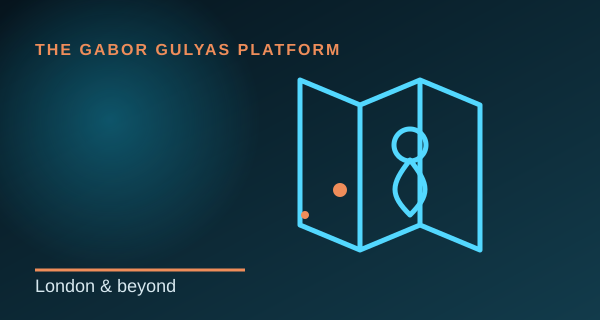

Kapcsolat
Lépj kapcsolatba
Kutatás, együttműködés, tanácsadási projekt és szakmai lehetőség.
Tovább →Email: info@gulyasgabor.com
Web: gulyasgabor.com
LinkedIn: linkedin.com/in/gabor-gulyas-gigi
Nyitott vagyok kutatási beszélgetésekre, együttműködésre, projektekre és szakmai lehetőségekre.
Minden rész külön célt, tartalmat és saját vizuális identitást kap.
Kutatás, együttműködés, tanácsadási projekt és szakmai lehetőség.
Tovább →Email: info@gulyasgabor.com
Web: gulyasgabor.com
LinkedIn: linkedin.com/in/gabor-gulyas-gigi

UK-alapú, magyar kötődéssel és nemzetközi szemlélettel.
Tovább →Nyitott vagyok megfelelő remote, nemzetközi és kutatási együttműködésekre.